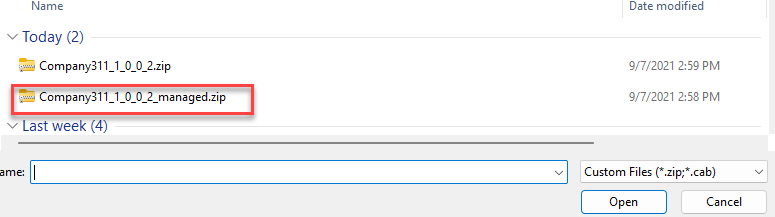

[!NOTE] Effective November 2020:
- Common Data Service has been renamed to Microsoft Dataverse. Learn more
- Some terminology in Microsoft Dataverse has been updated. For example, entity is now table and field is now column. Learn more
Lab 07: Test & Deploy
In this lab you will complete solution configuration by adding security roles for the users. Then you will verify, test, and deploy the solution in the production environment.
What you will learn
- How to deploy a solution to another environment
High-level lab steps
-
Exercise 1 – Create security roles for users
-
Company 311 User – read all on Building, user owned on Problem Reports
-
Company 311 Admin – All access for Buildings, Departments, Problem Reports
-
Associate Company 311 Admin role with model-driven app
-
-
Exercise 2 – Run solution checker
-
Exercise 3 – Use Test Studio to create test case for submitting problem (ok to not include image)
-
Exercise 4 – Export and import solution
-
Exercise 5: Add existing flow to solution
Prerequisites
- Must have completed Lab 02.1: Data model and model-driven app
Detailed steps
Exercise 1: Create security roles
In this exercise, you will create security roles for users.
Task 1: Create security roles
- Navigate to the Power Apps maker portal and make sure you are in the correct environment.
- Select Solutions and click to open the Company 311 solution.
- Click + New and select Other and then select Security Role.
- Enter Company 311 User for Role Name and select the Custom Entities tab.
- Set the read privilege of the Building Table to Organization.
- Set the read privilege of the Problem Report Table to User.
-
The read privileges for the Building and Problem Report Tables should now look like the image below. Click Save Create New.
-
Enter Company 311 Admin for Role Name and select the Custom Entities tab
-
Set all privileges of the Building, Department, and Problem Reports Tables to Organization.
- Select the Customizations tab.
- Set all privileges for Model-driven app.
- Click Save and Close.
- Click Done on the popup.
- Select Solutions.
- Click Publish all customizations and wait for the publishing to complete.
Exercise 2: Solution checker
In this exercise, you will run the solution checker on the Company 311 solution.
Task 1: Run solutions checker
-
Make sure you are still on the Power Apps maker portal site and you are in the correct environment.
-
Select Solutions, select Company 311 solution, click Solution checker and select Run.
-
The solution checker should start checking your solution, wait for it to complete. The solution check column value will change to Results with a timestamp.
-
Refresh the page and select the solution again, click Solution checker, and select View results.
-
Review the solution check results and make sure there are no issues.
[!NOTE]
If you are seeing errors in the Solution Check Result, open the component showing errors one by one and resolve the issues.
At this point you will see errors for Canvas Apps. Open both the apps one by one and fix the assessible label and Tab Index error. For assistance, you can refer to Microsoft Documentation. After resolving the issues, save and publish your app. Go back to the solution and re-run the solution checker.
Users who have vision, hearing, or other impairments can use your canvas app more easily and successfully if you consider accessibility as you design how the app looks and behaves.
Exercise 3: Use test studio
In this exercise, you use test studio to create test case for submitting a problem report.
Task 1: Create test case
-
Navigate to the Power Apps maker portal and make sure you are in the correct environment.
-
Select Apps, select the Company 311 Phone application, and click Edit. Select Skip if prompted.
-
Click File and select Settings.
-
Select Upcoming features.
- Select the Experimental tab and enable Formula level error management.
-
Close the settings pane.
Note: Currently test studio cannot record steps inside components like the tab control we are using, you edit the App OnStart formula, so the app navigates directly to the new report screen.
-
Select the Tree view menu.
- Select App and select OnStart.
-
Add the formula below to the existing formula.
; Navigate('New Reports Screen') -
Click File and select Save.
-
Click Publish.
-
Select Publish this version and wait for the publishing to complete.
-
Click on the back button to go back to the app designer.
-
Select the Advanced tools tab and select Open tests.
-
Click on the ellipsis of the Case and select Rename.
-
Rename the Case to Submit problem report.
-
Click Record.
-
You should see the New Report tab.
-
Fill out the form and click Submit.
-
Click Done button on the bottom-left side of the screen.
-
You should see list of the recorded steps. Click Play.
-
Click Publish and wait for the publishing to complete.
-
The steps should replay correctly. Click Done.
-
Close the test studio browser window or tab.
- Close the app designer browser window or tab.
Exercise 4: Import export
In this exercise, you will export the company 311 solution and import it into a new environment.
Task 1: Export solution
-
Navigate to the Power Apps maker portal and make sure you are in the correct environment.
- Select Solutions, and click to open the Company 311 solution.
- Click + Add existing and select Connection Reference.
- Select all of the connection references and click Add.
- Click Publish all customizations and wait for the publishing to complete.
- Click Export.
- Click Next.
-
Select Managed and click Export.
-
Save the solution on your computer.
-
Click Export again.
-
Click Next.
-
Select Unmanaged, change the version to match the managed solution version and click Export.
- You should have the managed and unmanaged versions of the solution exported.
Task 2: Create new environment and import solution
- Navigate to Power Apps Community Plan page
- Click on Existing User? Add a dev environment.
- Enter your credentials when prompt to sign in
- Select your country from the dropdown menu and click Accept
- Navigate to Power Platform Admin Center to see a new environment had been created by the system. We will refer to it as “Prod” environment for the rest of this course (the environment name will be
's Environment). - Navigate to the Power Apps maker portal and select the environment you just created.
- Select Solutions and click Import.
- Click Choose File.
- Select the managed solution you exported and click Open. 
- Click Next.
- Click Next again.
- Click Select connection for outlook and then click + New connection.
- It will open a new window. Click Create.
- Provide your credentials.
- Close the connections browser window or tab.
- Click Refresh.
- Repeat steps 12 - 16 for the rest of the of the connections.
- Click Import and wait for the import to complete.
- Click Publish all customizations and wait for the publishing to complete.
- Click to open the Company 311 solution you just imported.
- Review the components in solution.
- Select Apps and make sure you have both the Canvas and Model-driven applications.
- Click to open the Company 311 Admin application.
- The application should load without issues.
- Close the Company 311 Admin application browser window or tab.
- Click To open the Company 311 Phone App.
- The application should load without issues.
- Close the Company 311 Phone App browser window or tab.
Exercise 5: Add existing flow to solution
An employee has created a simple personal productivity flow. The flow looks like a very useful addition to everyone at the company so the decision was made to make this flow available to everyone by including it into the existing solution. In this exercise, you will create the flow outside of the solution and then add it to the Company 311 solution.
Task 1: Create the team
In this task, you will create the Lunchtime Sports team.
- Navigate to Microsoft Teams.
- Select Teams and click Join or create a team.
- Click Create team.
- Select From scratch.
- Select Public.
- Enter Lunchtime Sports for Team name and click Create.
- Click Skip.
Task 2: Create the flow
In this task, you create a flow that will get triggered when someone is added to the group “Lunchtime Sports”, the flow will send a notification to you and tell you to find out what sport the new member will be playing.
- Navigate to the Power Apps maker portal and make sure you are in the correct environment (your practice environment).
- Select Flows.
- Click + New flow and select Automated cloud flow.
- Click Skip.
- Search for groups and select When a group member is added or removed Office 365.
- Click Sign in.
- Provide your credentials.
- Select Lunchtime Sports for Group Id and click + New step.
- Select Condition.
- Click on the left value field and select @removed from the dynamic content pane.
-
Select is equal to on the second value field, for third value field select the Expression tab, type null and click OK.
- Go to the If yes branch and click Add an action.
- Search for get user profile and select Get user profile (V2).
-
Click on the User (UPN) field and select User Id from the dynamic content pane.
- Click Add an action again.
- Search for send and select Send me an email notification.
- Type New Lunchtime Sports Member for Subject.
- Click on the Body field and select Display Name from the dynamic content pane.
- Type was added to the Lunchtime Sports team, find out what sports this member is interested in. after the Display Name.
-
Rename the flow Notify me when a member is added to the Lunchtime Sports group and click Save.
Task 3: Test the flow
In this task, you will test the flow.
- Navigate to the Teams.
-
Click on the … More options button of the Lunchtime Sports team and select Manage team.
- Click Add member.
- Search and select a user you want to use for testing.
- click Add.
- Click Close.
- Navigate to Outlook online.
- You should receive the email notification. Open the notification email.
-
The email should look like the image below.
Task 4: Add flow to solution
In this task, you will add the flow to the Company 311 solution.
- Navigate to the Power Apps maker portal and make sure you are in the correct environment.
- Select Solutions and click to open the Company 311 solutions.
- Click + Add existing and select Cloud flow.
-
Select the Outside Dataverse tab, select the flow you created, and click Add.
- Click Publish all customizations and wait for the publishing to complete.
- Click Export.
- Click Next.
- Select Managed and click Export.
- Wait for the export to complete and save the exported solution on your machine.
- Click Export again.
- Click Next.
- Select Unmanaged, change the version to match the managed solution you just exported and click Export.
- Wait for the export to complete and save the exported solution on your machine.
Task 5: Import solution
In this task, you will import the solution into another environment.
- Navigate to the Power Apps maker portal and select the Prod environment that you created in Exercise 4 Task 2.
- Select Solutions and click Import.
- Click Browse.
- Select the managed version you just exported and click Open.
- Click Next.
- You should get a message This solution package contains an update for a solution that is already installed click Import.
- Wait for the solution import to complete.
- Click to open the Company 311 solution.
- Locate the flow you added to the solution and click to open it.
-
Click Edit.
- Click to expand the trigger.
- Click + Add new connection.
- Click to expand the condition..
- Click to expand the first step in the If yes branch.
- Click + Add new connection again.
- Click to expand the last step.
- Click + Add new connection one more time.
- Click Save and wait for the flow to be saved.
- Click on the <- back button.
- Click Turn on.
- The flow should show the status as On. You can verify the Status value in the Details sections.